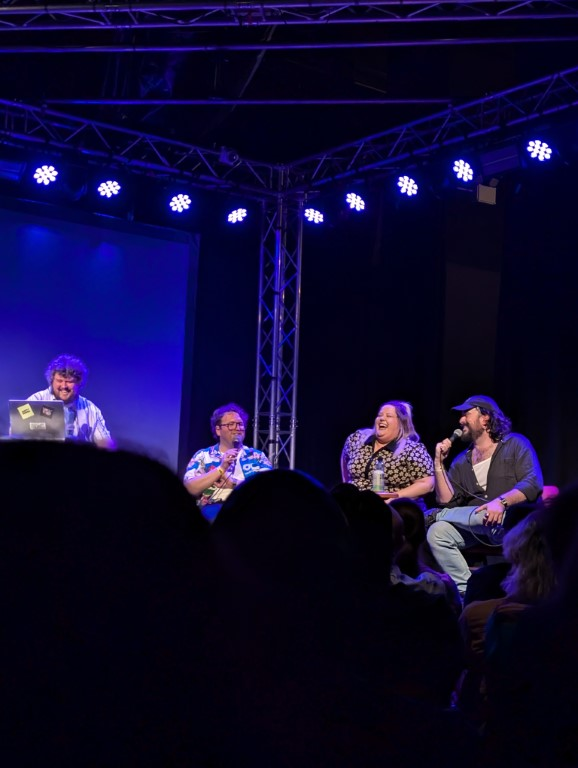
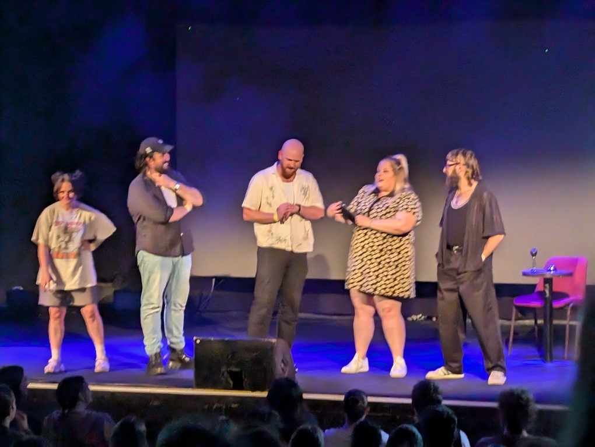
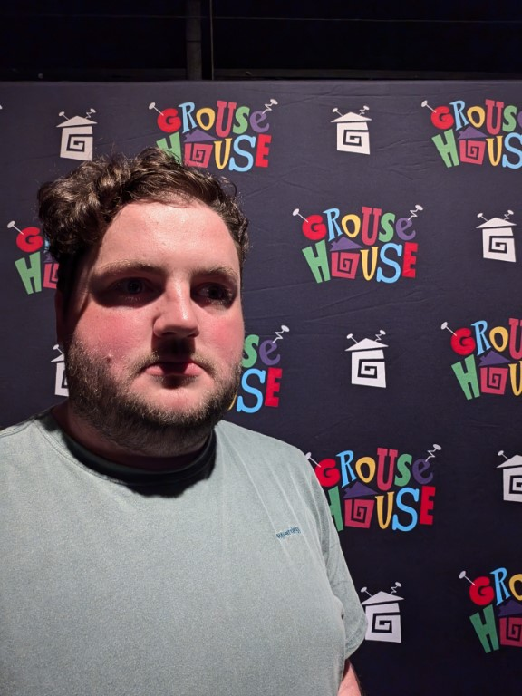
Guten Targen, it is the month of october. I now realise i don't know if thats how you say good morning in german as i only learnt a term of it in year 7 at the very beginning and i was supposed to have learnt italian but the teacher got the wires crossed anyway i remember she also threatened to cut off someones rat tail and i cant remember the guys name but he did give off rat energy. I don't think it was simon wardell but that kid also gave off rat energy. I also remember in Japanese in term 3 or 4 we had to watch spirited away but with subtitles but he forgot to turn subtitles on so i now have an aversion to that movie as i don't know what the start is about and it was confusing and i vaguely remember the teacher thinking we were lying about the subtitles and refusing to check.
Anyway. I also remember the time i got pulled into doing the magazine committee, we had one single meeting and got free binders. Then we never met again. High school was wild
Anyway. Busy month. 2 weekends i was not in sydney which was fun but also driving is tiring and having to say goodbye at the end stinks but heres photos
Played dnd, got 2 d20’s and also failed a check so bad i took 4 mental damage out of my 7 hp
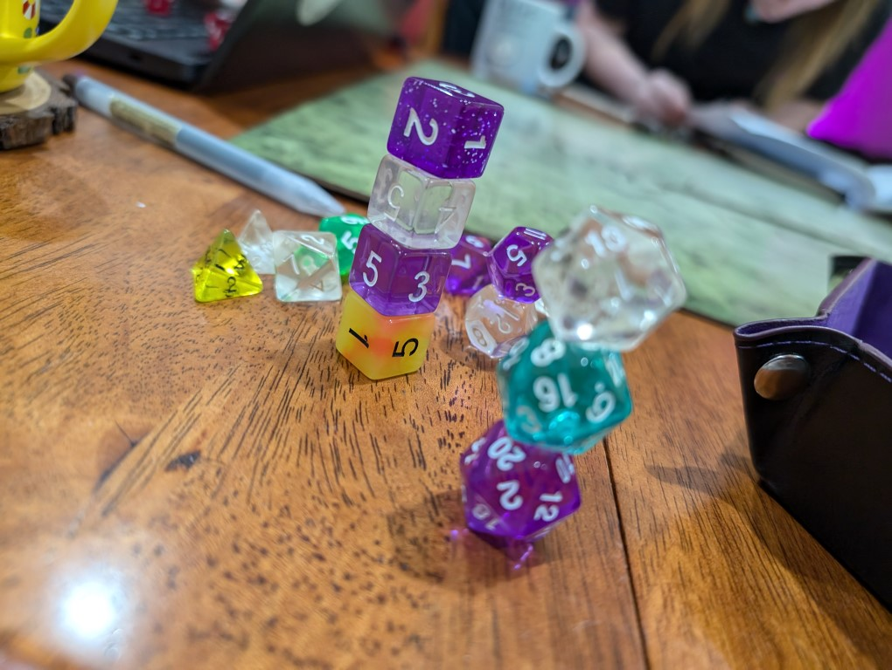
Drove to my mates place in bathurst for the long weekend, stopped off at the three sisters in the blue mountains and by george parking here was a cunt, i cannot beleive everyone also wanted to get out of sydney for the long weekend
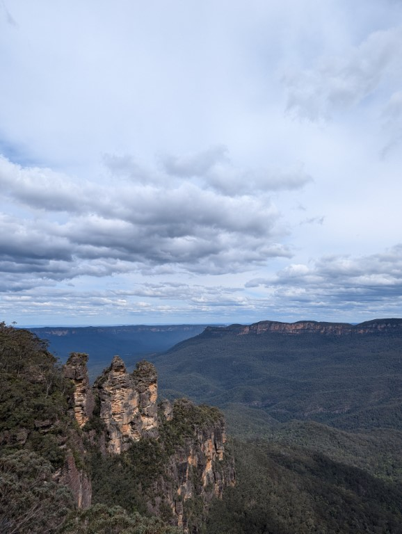
Perry is an adorable cat i was glad to get to befriend her- she just demanded pats
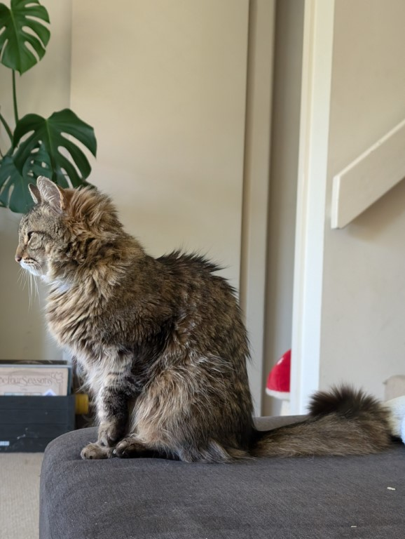
It was my friends bday on sat night and we forgot to eat the TWO (2) freddos ice cream cakes that were purchased for the night so that was our lunch
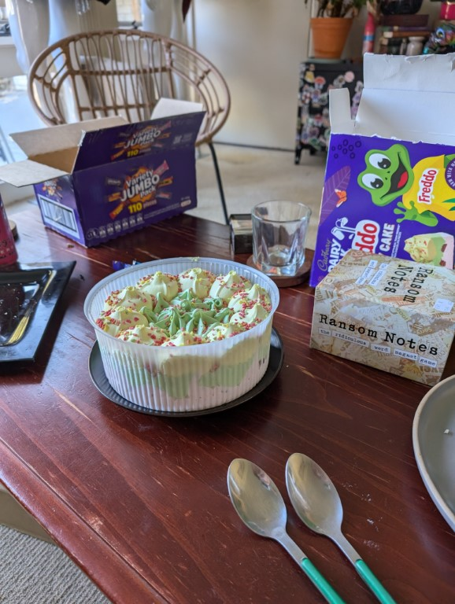
Then on monday we had the grimace meal (its rough) before i left to drive home
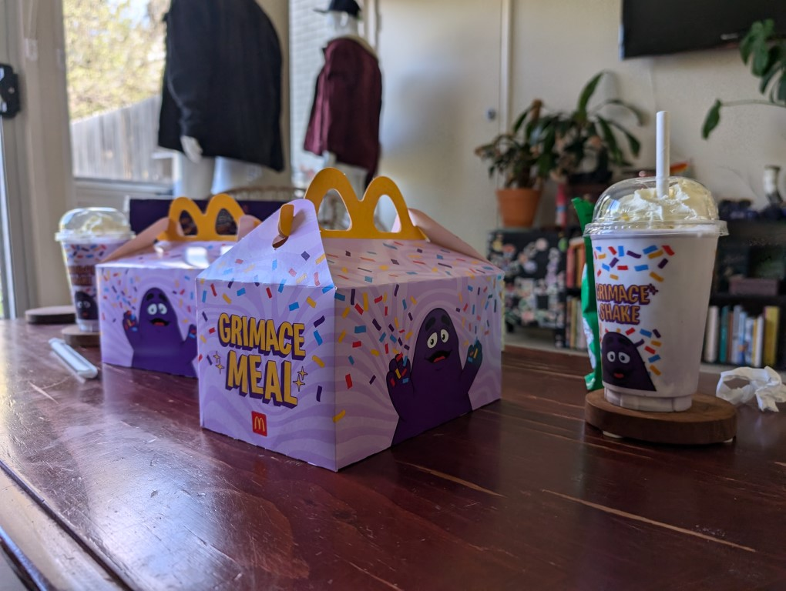
The ride through the mountains has some spectacular views but also the traffic made me want to get out and go sicko mode - parts of the road are just 1 lane and its 70kmph but then they love to just give you an overtaking lane for a km and then its just a race to overtake the one slow car before suddenly theyre in front of you and you have to deal with them until you get to break free and then suddenly theres a crash so its 10 mins of stand still and im so glad to be free of it
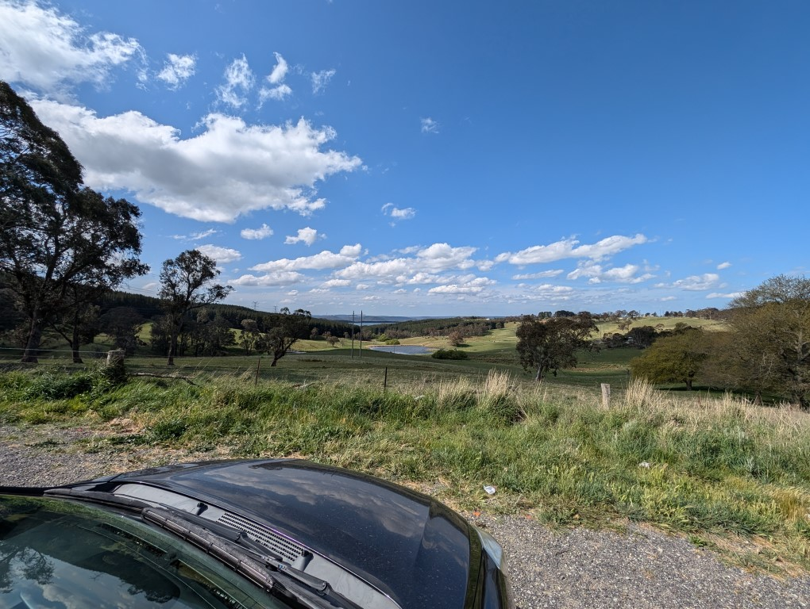
Saw my neighbours cat again and we got to have a staring contest again
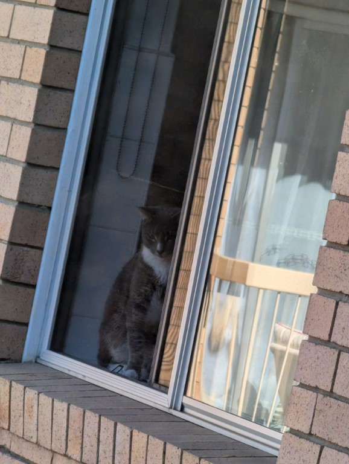
Fortnite put a chest in this hedge llamas ass and that made me laugh for too much
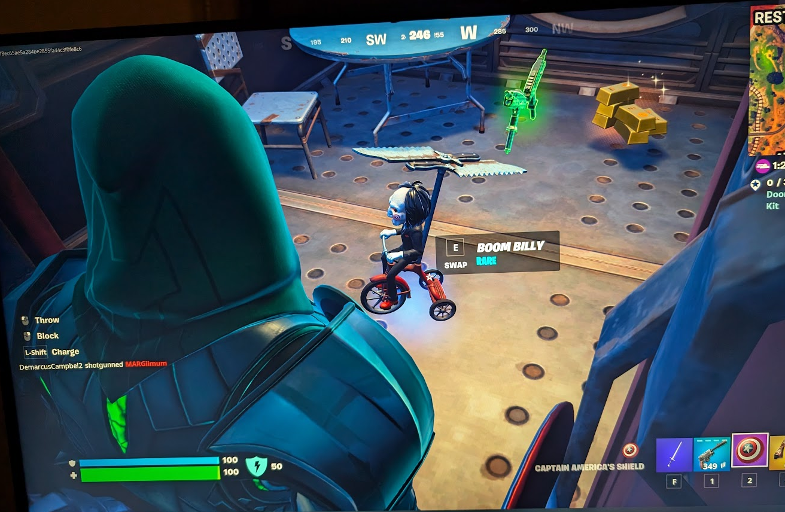
Then on a Friday night after a dinner i drove through the night to get to my grandfather's place, they replaced the maccas with a Hungry Jacks a while ago and the fact i cant get a hash brown at 11pm from there is bullshit, but the hot chocolate i got was near perfection for that time
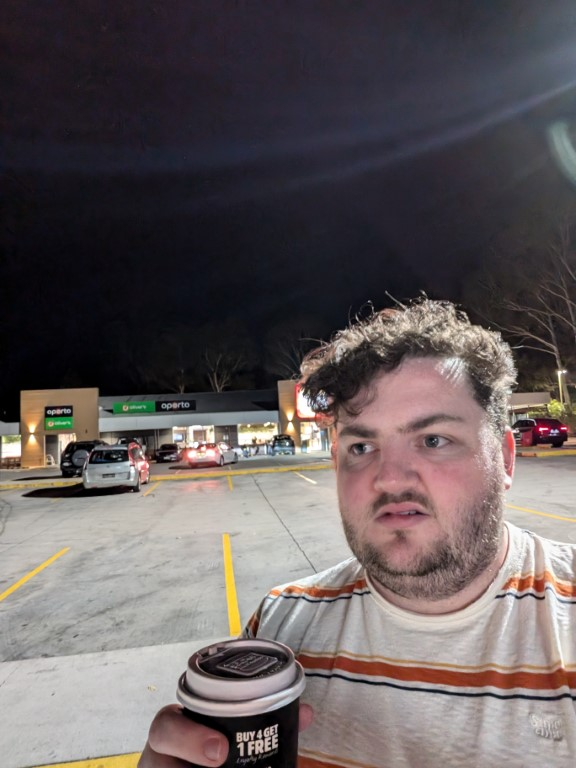
Then i got drunk with my mum and played pool, she pours heavy which is where i learnt to pur heavy from. Also the vodka in the background im drinking i found out was from my uncles first wedding and has been in my grandfathers bar for the past 25 years and honestly its pretty good vodka
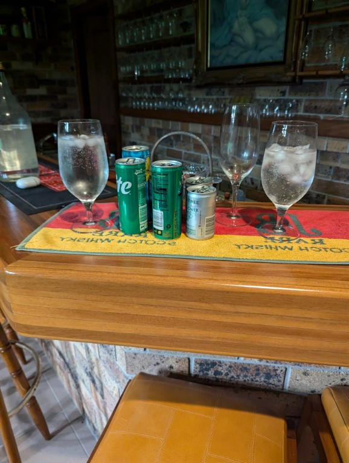
She took this pic of me and fuck it im including it
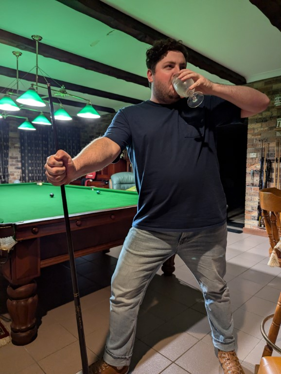
Went to South by south west sydney to see the opening night screening of Y2k which was a fun movie but i sincerely hated the entire vibe of south by, i spent 10 mins running around the icc trying to find the theatre thinking i was late but the movie started late because other people were also running around. The lobby of icc had just loose copies of forbes everywhere and i hated the vibe so much
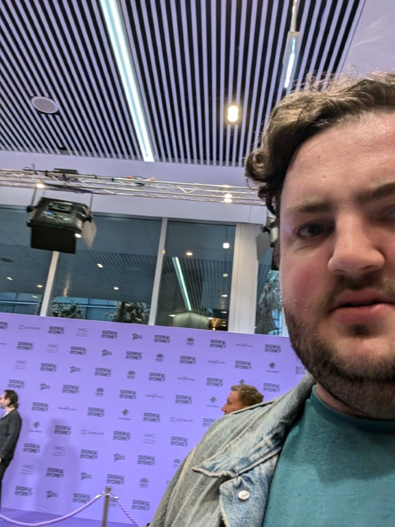
Saw titanique which is a 90 min retelling of titanic (a movie i realised i had only seen like once on free to air but only from when theyre on the boat to when he got handcuffed to something) by celen deon and it was gay and fantastic and hilarious and wild good shit.
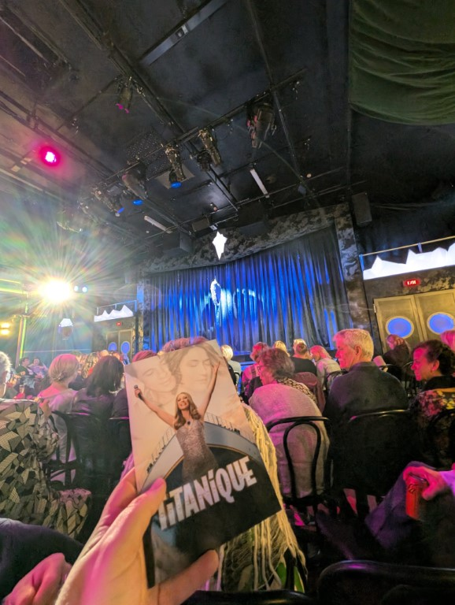
Aunty donna had their Grouse by Grouse House comedy night as apart of sxsw which was also fantastic, taking this sorta pic infront of those sorta walls is my new bit i guess - saw the mish and zach podcast be as off the rails as normal, Most Upsetting Guessing Game be just as deranged as normal and Demi Lardner’s so you wanna win a penis pump also being as crazy.
Then finally i had a night where i wasnt doing something so i made muffins and pina coladas and watched merrily we roll along 10/10 would recommend but also making pina coladas is a huge pain the butt
Went home to get some more stuff and for some reason action man was sitting on the fence like this
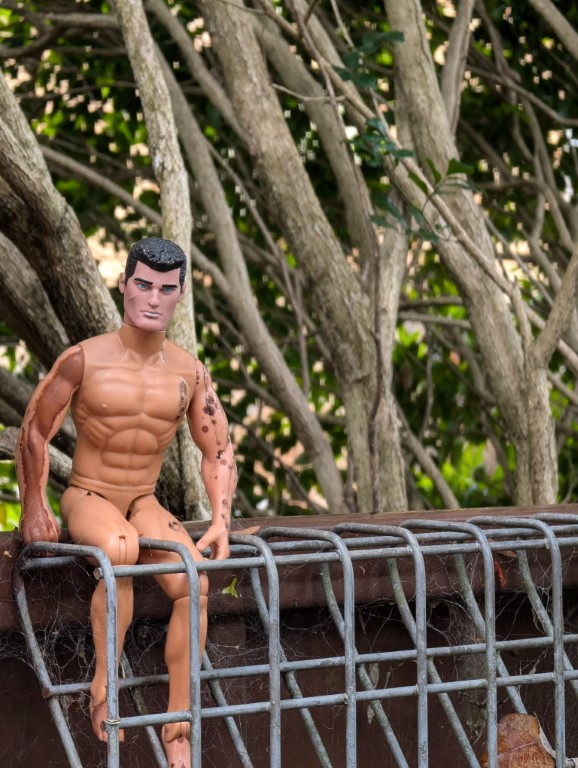
The woolworths at waringah mall now has these ipads that you use to scan as you go and i felt crazy using it because it was only people under 30 using it and we all looked like ipad kids
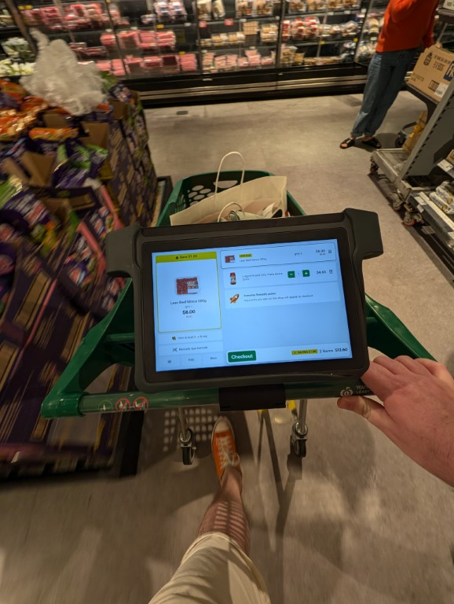
I also painted my nails, i am ever so bad at it but its a fun vibe- ive re done it several more times since i took this pic and my adhd loves to have a little job to do that i can change at a whim
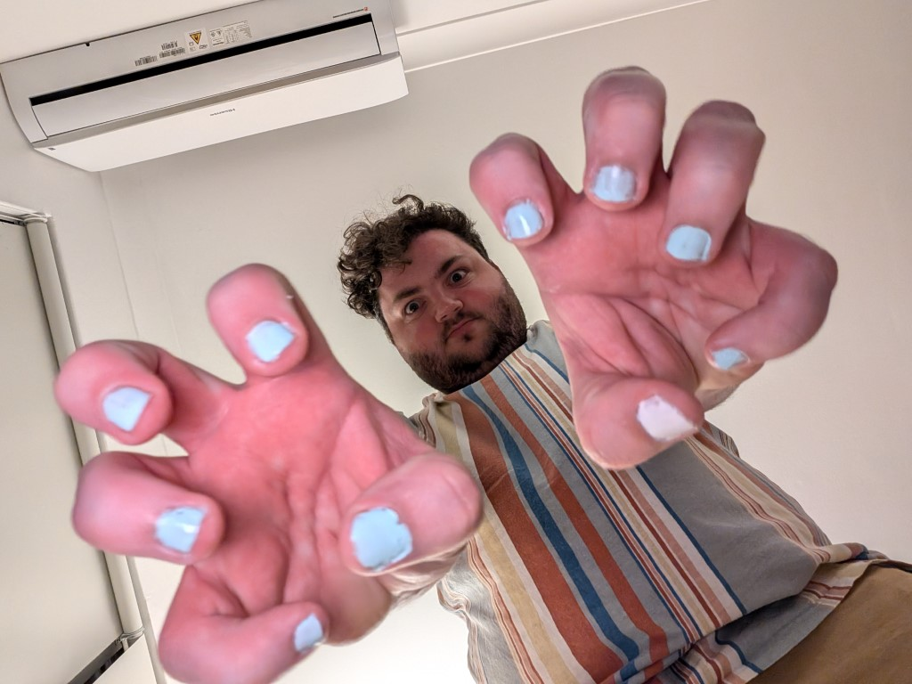
Fornite has a thing where you just throw billy the puppets from saw? And also there are crt’s that have billy on it asking if you wanna play a game this shit is bonkers
I finally got some spare keys cut because i for the last 2 months of living here have been absolutely terrified of locking myself out and also they fucked up one key and i had to get mitre 10 to cut it 3 more times to get it right
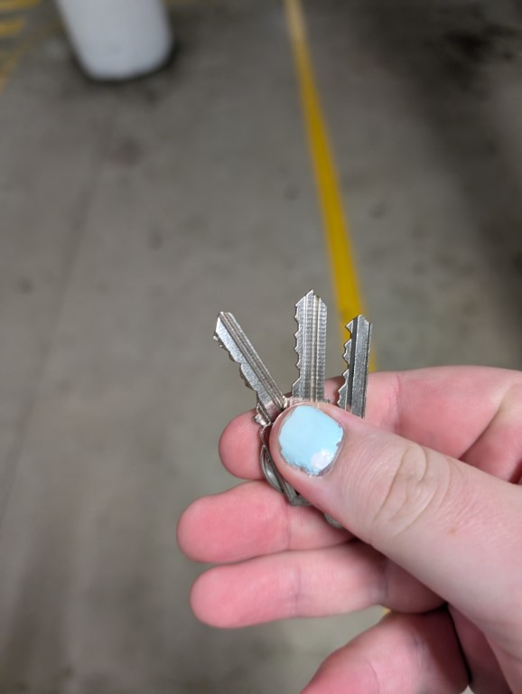
I also finally got an washing machine and i no longer have to lug my ass down to an laundromat and spend $18 on washing and then having to lug it home god it was depressing but now i feel all powerful
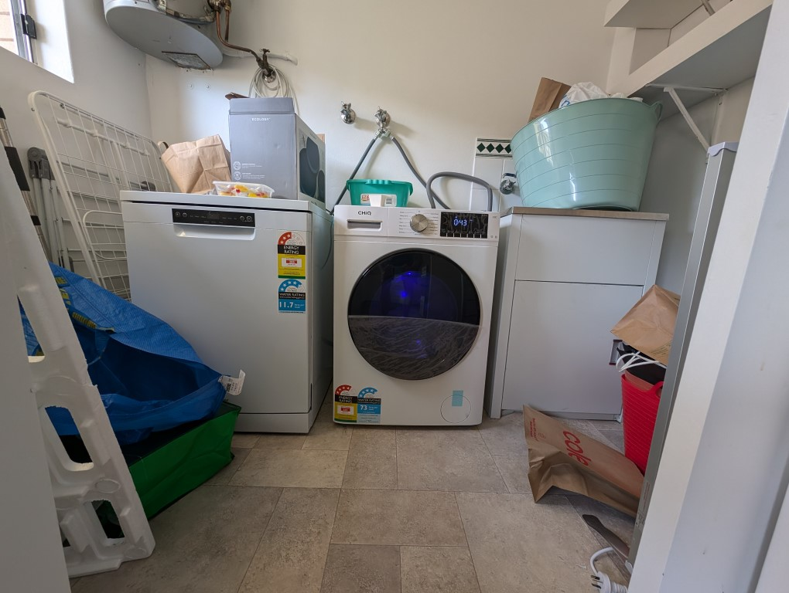
Then i spent frankly too much money to go to Luna Park alone to try and win a stupid contest (i didnt) and went on the ferris wheel solo (some of you have been on the ferris wheel with me and know just how much i fucking hated the experience of being on the ferris wheel especially alone without a counterbalance)
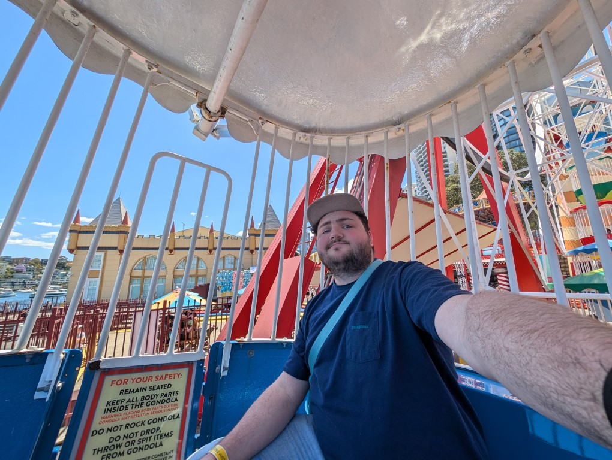
The muppets 2015 - This show objectively is mid, but its the muppets being adult. Theres an ep where gonzo drinks because his sad and they get hungover and its like, hey tahts dope! Also its just so impressive the puppetry on display that i have to marvel at it and go “this is so coooooool”
Flat Earthers: The Musical- - Ok so. Im not a fan of Lou wall who is one of the three writers of this (i found their micf show very sorta lazy? And reliant on just showing memes and also had ai eh) and some of the bits at the start had me dreading the show but as it went on it was less and less reliant on “isnt reddit wild” and it became much stronger i think. Michelle brasier was the standout she ruled, also i didnt realise until the after show q&a that the main character was also the main character of little women and it properly shook me as they looked so different
Titanique - This show has so many jokes packed into it that are all sold so well it rules so much. Imagine if a bunch of gay 20 somethings were given the rights to tianique and celen deons music and thats what this show is, parts are made up, parts are pure chaos, but its sold so well that i had a fucking blast.
Beetlejuice Beeltejuice - So i havent seen beetlejuice. I grew up with my mum saying it was her favourite movie and that when it came out on vhs she ruined the tape by rewinding when they said “beetlejuice beetlejuice beetlejuice”. But i have seen a bootleg of the musical so i had a fucking blast with this, some scenes went on for too long and sorta went no where but also it just felt like every part of the movie was made with passion and love that i havent seen in a while, and also the weird burtonisms of how everything looks fucked up rules. And there truly is a character that just exists because tim burton thinks shes hot and thats fuckin dope. Also willem defo is just turned up to 11 and sells it so well and is just such a great joke character
y2k - This feels like one of kyle mooney’s snl sketches in the best way, so many just good movie scenes but there are at least like 3 or 4 segments that could be sketches on their own and the energy shifts so seamlessly i loved it. Also its not coming out till december and so im the snob thats like "yeah i saw it early at a film festival"
Haunted Mansion 2023 - This movie focuses on how death sucks and also grief makes you weak to ghosts i was so shocked that the disney movie was actually gonna go there with it. It wasnt particularly good but i gotta admire the swings it took which also include danny devito which is always a delight
The First Half of the brad pitt and tim no thats not his name George clooney! - Editors Note, Its Wolves. So i didnt get far in this because i watched it with my mum after we played pool and we were both tipsy and sleepy but im not sure if the movie holds up because it really feels like someone saw the money that the oceans trilogy made and went “what if we did that” but then didnt seemingly realise that oceans had them as great friends whereas wolves has them as enemies which is eh
Only murderess in the building - this show continues to be wonderful, Steve Martin and Martin short are both so fuckin funny together and Selina Gomez has fit into their style so seamlessly and is just such fun, The finale was on tonight and it was such a blast i adore this show
Agatha All Along - I wasnt expecting this to be good. I was mainly watching because it had Patti LuPone in it and aubrey plaza and boy george was i not exepcting mavel to just make a show about witches? theres a sprinkle of superhero shit but most of it is dedicated to an story about witches told in a way that makes me think the writers have an actual love for witchcraft and it didnt fuck up the ending! they kept saying in press tours its gay and like, come on no one is gonna believe that. but it honestly was sorta gay? in a like "disney has to release this shit around the world so its gayness is subtle or only in certain scenes" way
Finishing Person of Interest - One of the penultimate episodes is a backdoor pilot to a show they never made and i adore it so much because its such a swing to take that went no where but is like, youve only got a 12 ep season for you to end and one is setting up a spin off that they didnt do! The episode also had this bit that ruled. The final episode properly amde me cry not only because its a beautiful send off and reflection to what death means but because i remembered watchign it in 2015 as it aired and that hit me 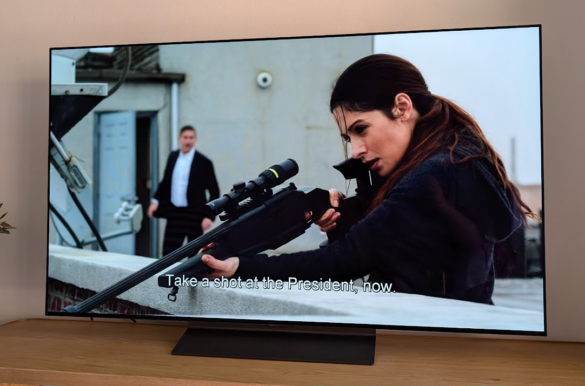
Its wild to be busy? Doing things most nights is fun but also fuck me it can be exhausting. But then again not doing things every night can be depressing. This is something to think about.
Editors note: What the fuck am i talking about there fucking christ.
I forgot how addicting this game is, just being able to sit and wait for a min just play a round on my phone its crazy and also i forget how bad i can be at this fucking game.
This is probably the most vulnerable i have been in these but i caught myself talking with my hands today whilst on a work call and saw my nails and did almost cry because suddenly i realised thats what like self expression is and god gayyyyyy (sorry i had to i cannot be that sincere truly it isnt my brand. Get some drinks in me tho and i will be)
October! What a month. On a programming note, next months email might be delayed by a day or two as i will be on an flight back from London that lands i think on the first? Oh actually there might not be a delay no actually im gonna say there might be one because i land at 6am and the qantas flight doesnt have wifi which is fun
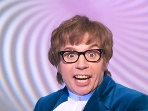le end